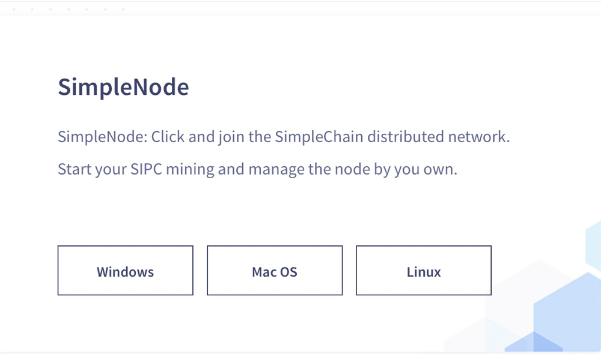
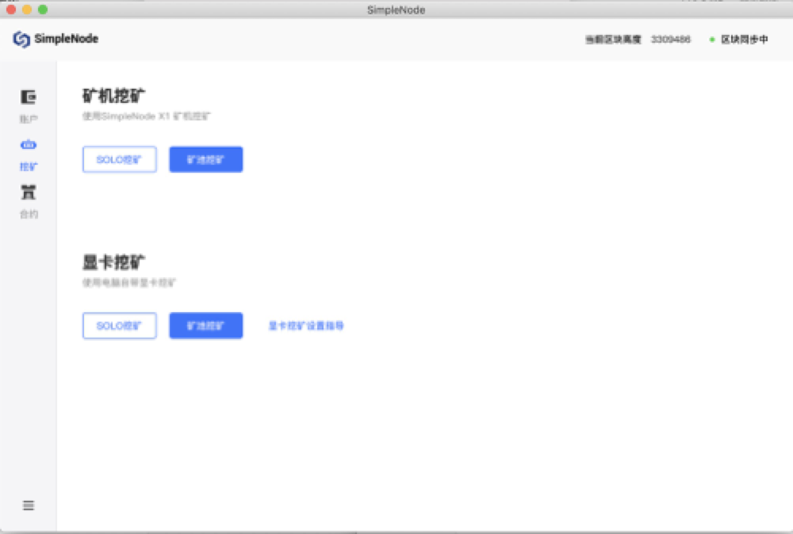

Docker镜像搭建
获取镜像：
docker pull simplechain/sipe:latest
启动节点：
docker run -it -p 30312:30312 simplechain/sipe
开启RPC
docker run -it -p 8545:8545 -p 30312:30312 simplechain/sipe --rpc --rpcaddr "0.0.0.0"
开启JavaScript控制台
docker run -it -p 30303:30303 simplechain/sipe console
将区块数据存储在指定目录
docker run -it -p 30312:30312 -v /path/on/host:/root/.simplechain simplechain/sipe
如果开启了RPC，可以通过以下命令查看自己的节点是否启动成功：
curl -X POST localhost:8545 -H "Content-Type:application/json" --data '{"jsonrpc":"2.0","method":"web3_clientVersion","params":[],"id":68}'
安装包搭建
打开Simplechain的[官网],然后下拉找到SimpleNode模块，如下图：

根据自己的服务器系统下载对应的版本，下载后按照提示安装就可以了，安装好以通过助记词创建钱包账户。然后就可以支付或者接收sipc，挖矿，以及发布合约。
账户

挖矿

合约

源码搭建
前期准备:Go 语言环境(1.10 或以上版本)、C 语言编译器
1.下载 SimpleChain
可以通过 git 将项目 clone 到本地，也可以在 https://github.com/simplechain-org/go- simplechain 页面直接下载。
git clone https://github.com/simplechain-org/go-simplechain.git
2.安装 sipe
1.进入 go-simplechain 根目录。
cd go-simplechain
2.使用 make 工具安装 sipe。
make sipe
>>> /usr/local/go/bin/go install -ldflags -X main.gitCommit=9d73f67e1dc5587a95f52c13fee93be6434b42ac -s -v ./cmd/sipe github.com/simplechain-org/go-simplechain/core
...
github.com/simplechain-org/go-simplechain/cmd/sipe
Done building.
Run "/Users/yuanchao/go/src/github.com/simplechain-org/go-simplechain/build/bin/sipe" to launch sipe.
当终端出现以上输出时，表示 make 执行成功，此时在 go-simplechain/build/bin 目录下 将会生成 sipe 可执行文件。可以将其移动到任何目录下或将其加入到环境变量中，以此 来便利得运行sipe程序。
启动sipe
1.创建用于存储节点数据的文件夹,如果不
mkdir chaindata
2.启动sipe主网节点
开启 RPC 服务并指定 RPC 监听地址为 127.0.0.1，端口 8545。节点数据存储目录为 chaindata
./sipe --rpc --rpcaddr 127.0.0.1 --rpcport 8545 --datadir chaindata
当出现类似以下输出时，表示启动成功，并开始同步 SimpleChain 主网区块。
INFO [06-19|09:35:01.481] Maximum peer count ETH=25 LES=0 total=25
INFO [06-19|09:35:01.492] Starting peer-to-peer node instance=Sipe/v1.0.2-stable-0cbf2a41/darwin-amd64/go1.12.1
...
INFO [06-19|09:35:33.700] Block synchronisation started
INFO [06-19|09:35:36.756] Imported new block headers count=192\
elapsed=22.273ms number=192 hash=bb758a...bea1b6 ignored=0
3.启动sipe控制台
新建终端窗口，通过以下命令开启一个连接到此节点的交互控制台。
sipe attach chaindata/sipe.ipc
4.创建账户
在启动的控制台下使用以下命令创建一个账户。
> personal.newAccount()
Passphrase:
Repeat passphrase: "0xc8d8ba3bdba3a1e3ca1d6cd48106d84036f6c0bd" //账户地址
创建成功后，控制台会返回账户地址，同时会在chaindata/keystore 生成账户的json文件，此文件可以通过密码解析获得账户私钥。
5.启用挖矿
重启sipe节点，启用挖矿，指定矿工地址为你创建的账户地址，挖矿线程数为1。
sipe --rpc --rpcaddr 127.0.0.1 --rpcport 8545 --datadir chaindata --mine --minerthreads=1 --etherbase=0xc8d8ba3bdba3a1e3ca1d6cd48106d84036f6c0bd
当然，你也可以通过控制台指定矿工地址并开启挖矿。
> miner.setEtherbase('0xc8d8ba3bdba3a1e3ca1d6cd48106d84036f6c0bd')
> miner.start()